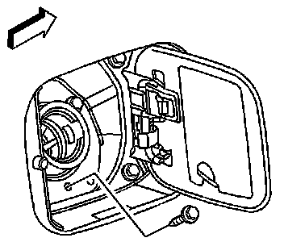
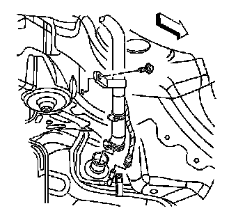

Fuel Filler Hose: Service and Repair
Filler Tube Replacement
Removal Procedure
1. Remove the fuel filler cap.
2. Drain the fuel tank below the level of the fuel filler hose. Refer to Fuel Tank Draining (Service and Repair) .

3. Remove the bolts securing the fuel filler tube to the body.
4. Remove the right rear wheel. Refer to Tire and Wheel Removal and Installation (Service and Repair) .
5. Remove the right rear wheelhouse liner. Refer to Rear Wheelhouse Liner Panel Replacement (Service and Repair) .

6. Remove the fuel filler tube brace bolt.

7. Disconnect the fuel filler hose (1) from the fuel tank.
8. Disconnect the filler vent tube (2) from the evaporative emission (EVAP) hose. Refer to Plastic Collar Quick Connect Fitting Service (Plastic Collar Quick Connect Fitting Service) .
9. Remove the fuel filler tube from the vehicle.
Installation Procedure
1. Position the fuel filler tube to the vehicle.
Notice: Refer to Component Fastener Tightening Notice (Component Fastener Tightening Notice) .
2. Connect the filler hose (1) to the fuel tank.
Tighten the fuel filler tube hose clamp (3) to 3.5 N.m (31 lb in).
3. Connect the filler vent tube (2) to the EVAP hose. Refer to Plastic Collar Quick Connect Fitting Service (Plastic Collar Quick Connect Fitting Service) .
Notice: Refer to Fastener Notice (Fastener Notice) .
4. Install the fuel filler tube brace bolt.
Tighten the fuel filler tube brace bolt to 9 N.m (80 lb in).
5. Install the bolts securing the fuel filler tube to the body.
Tighten the fuel filler tube bolts to 3.5 N.m (31 lb in).
6. Install the right rear wheelhouse liner. Refer to Rear Wheelhouse Liner Panel Replacement (Service and Repair) .
7. Install the right rear wheel. Refer to Tire and Wheel Removal and Installation (Service and Repair) .
8. Add fuel to the fuel tank.
9. Inspect for fuel leaks.
10. Install the fuel filler cap.